Scheduling, reminders, clients, and paperwork in one calm place — built by a massage therapist who was tired of trade-offs.
KinesioCal is getting ready to launch. Email KinesioCalendar@gmail.com and we’ll let you know the moment the doors open.
Drag to book, drag to reschedule. Online-booking rules shape what clients see — they never block you on your own calendar.
“Thirty minutes after three hours of hands-on work.” The break shows on the calendar and slides as bookings land.
House calls are padded by the actual drive between addresses, leg by leg — not a flat “add 30 minutes” guess.
Set up your info, services, and hours — that’s it. Everything else has sensible defaults you can change later.
Each feature exists because a working therapist needed it. These are the ones you won’t find in generic booking software.
Because you became a therapist to do massage, not programming.
Choose Easy Mode at signup and you’ll only see the essentials: your info, your services, your hours, your calendar. Every other setting quietly uses a sensible default. Flip the toggle anytime to see everything — your settings never accidentally reset.
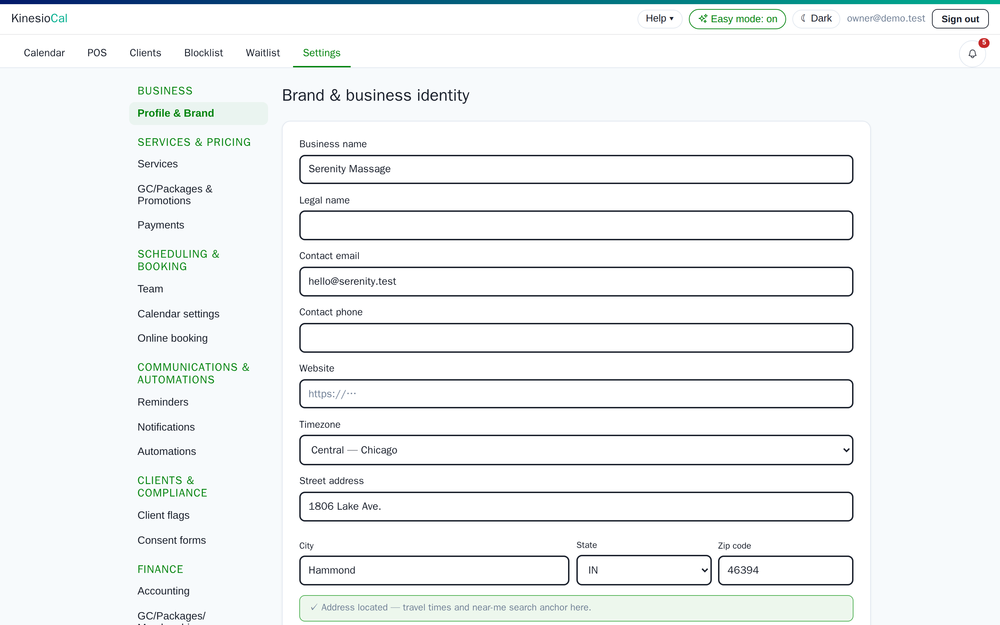
Easy mode on: fewer tabs, same defaults underneath.
Because your booking software should never tell you no on your own calendar.
Drag an open slot to book. Drag a card to reschedule. Each therapist gets their own column, buffers and turnover time show honestly, and business hours shade the grid. All the rules you set for online booking — notice windows, spacing, day availability — shape what clients see. They never block you or your staff. And every one of those settings can be customized per provider, so a therapist who takes walk-ins and one who needs a day’s notice can share the same calendar.
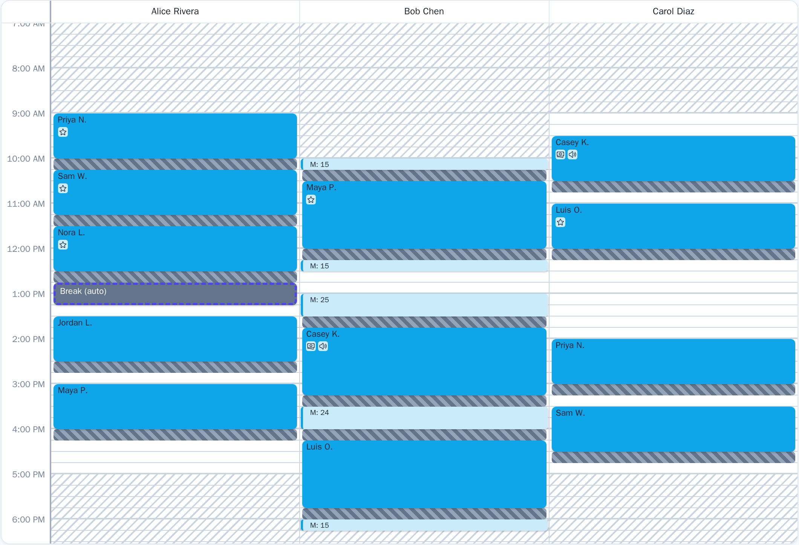
Day view: three therapists, buffers, drive time and a floating break, all on one grid.
Because your hands need a rest after three hours, not at 12:00 sharp.
Write the rule once: “a 30-minute break after 3 hours of hands-on work.” KinesioCal keeps a visible break block on each day and slides it as bookings land, snapping it against appointments so no odd unbookable gaps form. Online booking never sells a slot that would break the rule. Travel and buffers don’t count as rest. Staff can always override — and are asked to place or dismiss the break when they do.
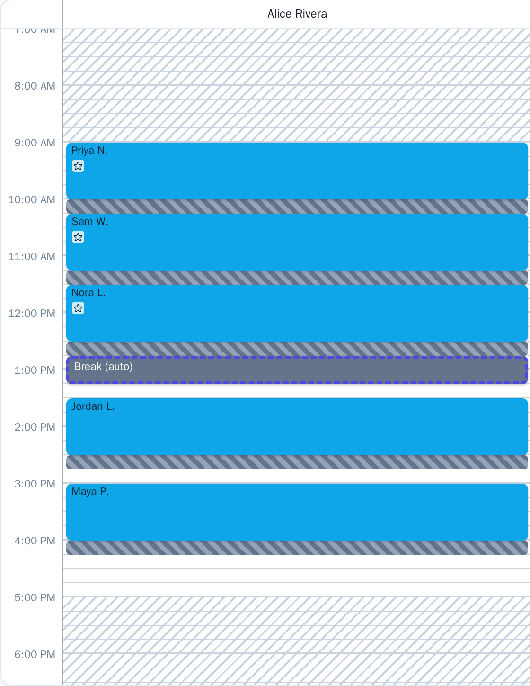
Three hours of bookings, then the break lands by itself.
Because a mobile practice lives and dies by the drive, and a flat 30-minute block is a guess.
Every mobile visit carries its own travel in and travel out, calculated from the actual addresses — office to the first client, client to client, last client back home. Two mobile appointments booked consecutively share one leg — no wasted time. Each leg is padded by your safety margin and rounded to your calendar grid, and it shows on the calendar as its own band, so you can see at a glance where the day is tight. Reschedule a session and the drive time recalculates automatically — for that visit and for the neighbors it leaves and lands beside.
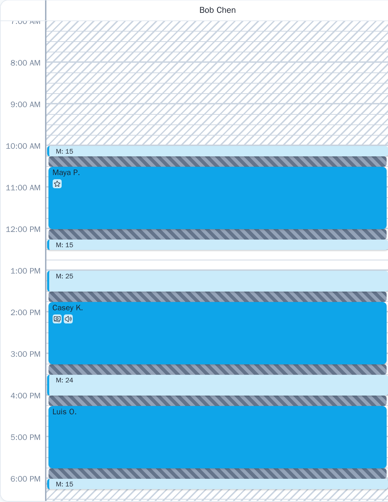
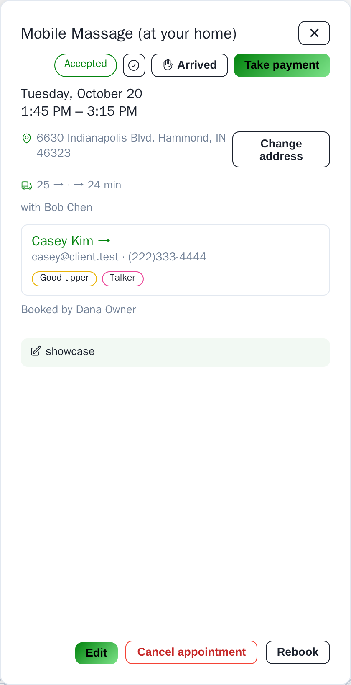
Three home visits, each with its own drive stamped on the calendar.
Because “is 2:00 free?” is the wrong question for a house call.
Type the client’s address and ask for times. KinesioCal checks the drive from wherever you’ll already be and offers only the starts that genuinely work, with the minutes in and out printed on each one. Your clients see the same honest availability on the online booking page. Can’t route an address? Staff can still book it with a default travel time of their own.
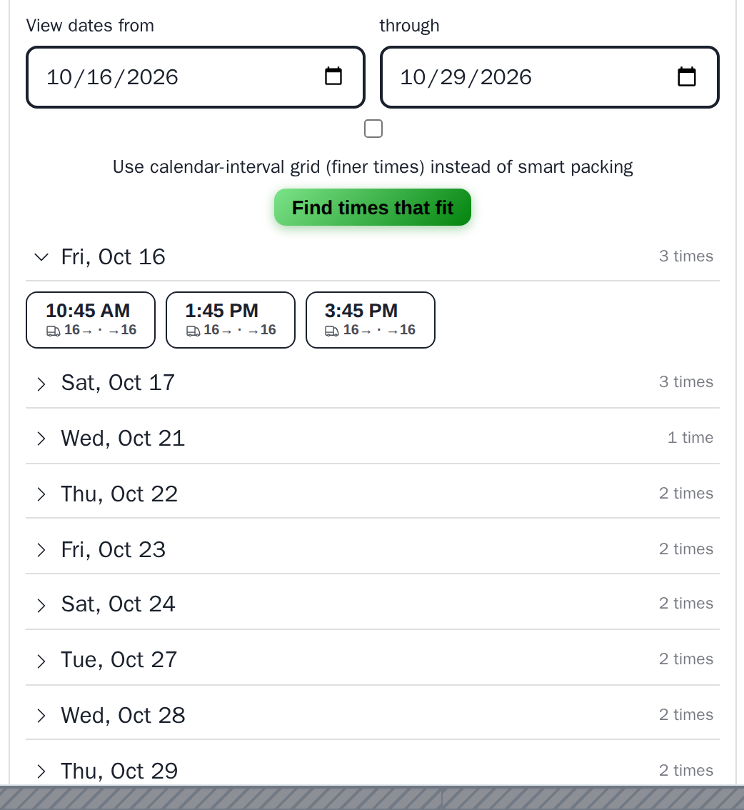
Each suggested time shows the drive in and out.
Because a chair event is one block on your calendar and twenty tiny sessions for everyone else.
Schedule a two-hour event, pick the therapists, and KinesioCal splits it into per-participant time slots with turnover. The event is one tile on your calendar; inside it lives a sub-calendar where each participant books their own slot — publicly, by private link, or on paper. Mobile events reserve drive time to the venue. Each participant becomes a real client with a real appointment, so reminders, checkout and the portal all just work. Events build their own custom printable flyers, QR codes and sign-in sheets based on your settings. Organizers get their own portal to manage their event too!
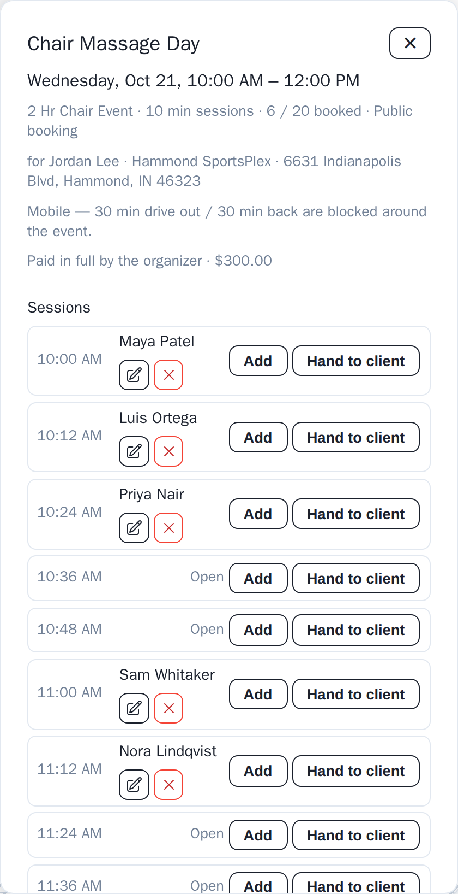
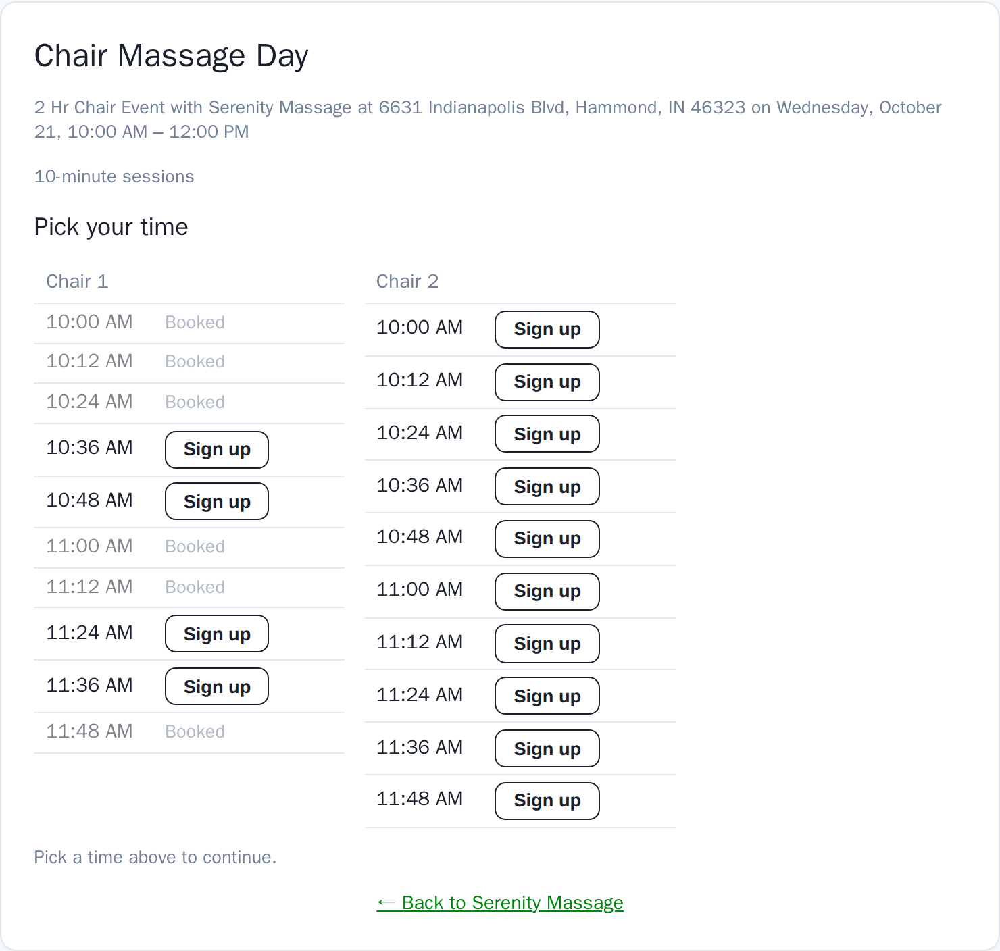
Staff see the roster per session; guests pick a chair and a time.
No more illegible email captures, no more copying emails into your list later — it’s already done!
From any open session, tap “Hand to client.” The sign-up form opens with that time locked in; the walk-up types their details, taps Sign up, and the page ends on “hand it back to your therapist.” Works for public, private-link and paper-only events alike. Initial each participant as they sit down, mark no-shows, and take payment per seat when attendees pay their own way.
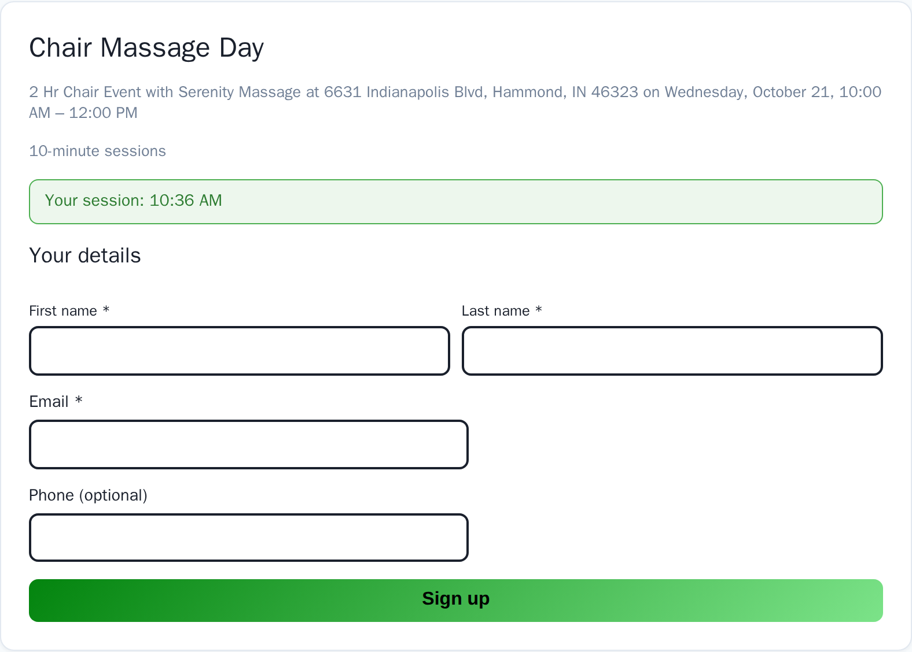
The walk-up sees one locked time and your required fields.
Because the person who no-showed three times at the studio down the road is about to book with you.
Your own blocklist does everything it says: a blocked person can’t book online, can’t message you through the platform, can’t buy gift cards, and receives no emails. Opt in to the shared safety network and businesses within your alert radius quietly watch out for each other. When someone with a shared report tries to book with you, the attempt lands in your log — identity-minimized, showing only what that person gave your business themselves, plus the category and whether documentation exists — and auto-imports to your blocklist for the categories you choose. Providers can exempt and restore clients case by case for their own business, and you choose the categories that matter to you: protect your therapists from all reported clients, or just from the most serious policy violators like predators. It’s up to you which categories you honor in the network. No member lists, nothing to join or manage by hand. You can stop saving every warning post about bad clients to your phone.
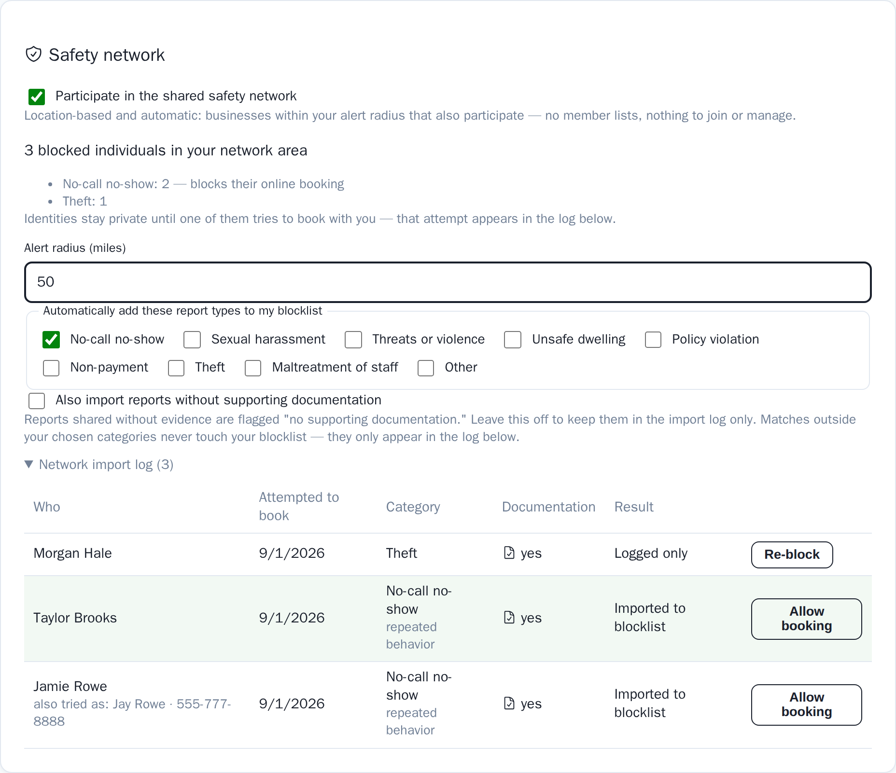
Three blocked individuals nearby; two were auto-imported when they tried to book.
Because “create an account to continue” is where new clients leave.
Pick a service, pick a time, type a name and email, done. No password, no verification loop, no app to install. Guests are matched to existing client records by email or phone, so a regular who books without an account never becomes a duplicate. If they ever want a login, they claim their history later with the same email — every past visit links up automatically. Your existing clients can also unlock a restricted therapist with just the email they book with.
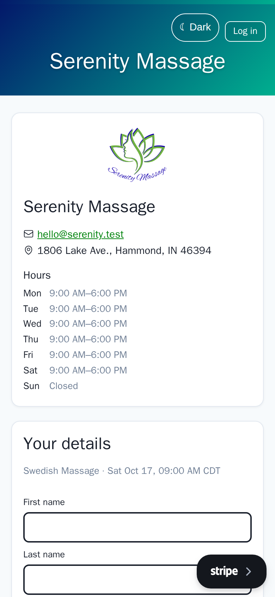
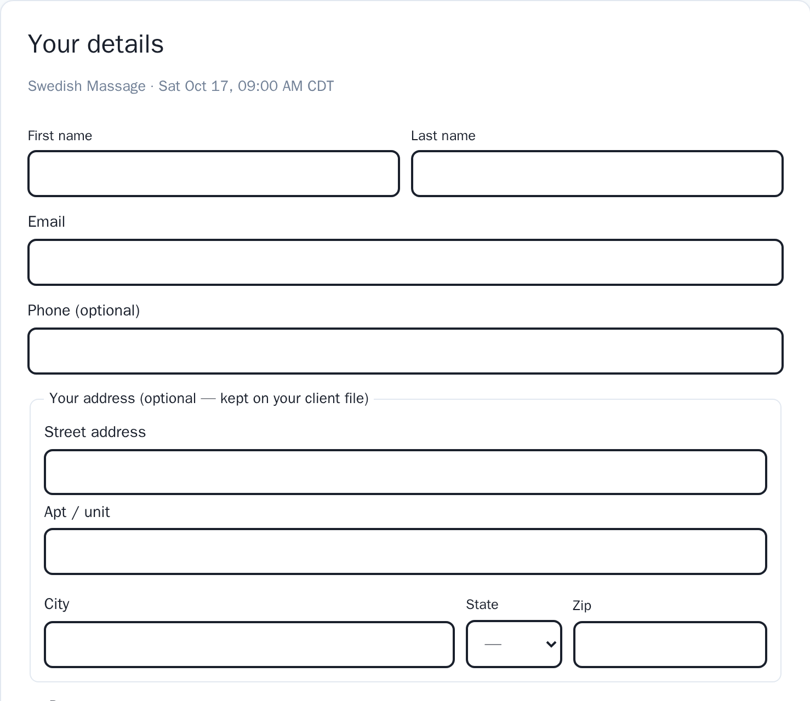
The whole details step. Nothing asks for a password.
Because “can you send me an invoice for insurance?” shouldn’t be your job every month.
Clients pick a date range in their portal and a PDF invoice lands in their inbox — itemized the way insurers want it, with each add-on on its own line, per-session paid or outstanding status, and every treating therapist’s license and NPI printed at the bottom. Your logo, address and terms are already on it. Staff can generate the same invoice from any client profile, add a note, and email it with one click.
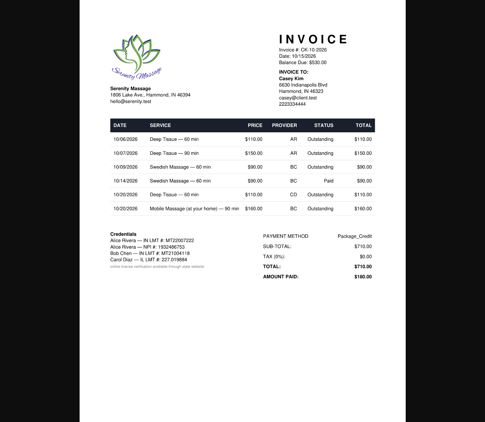
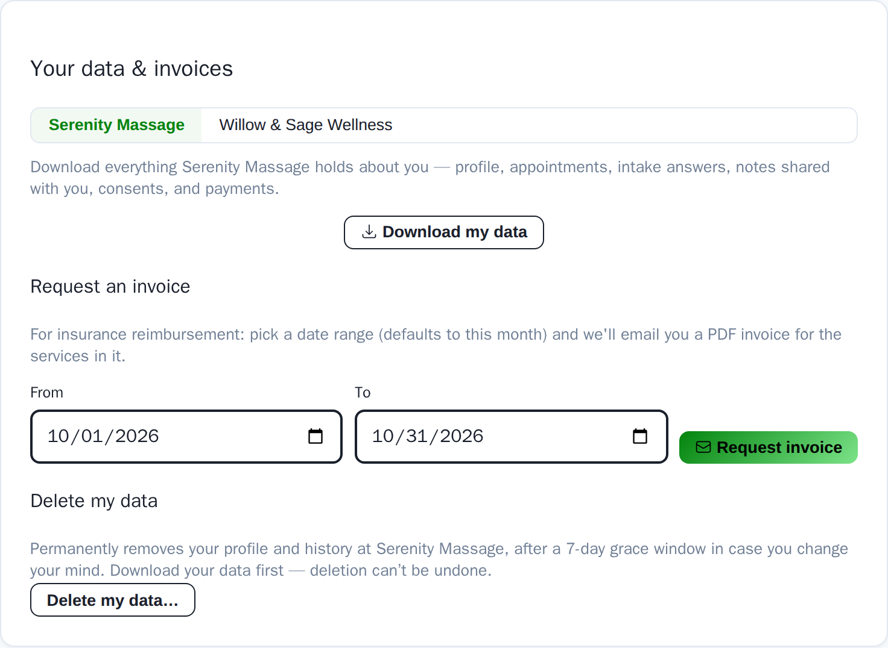
The PDF, and the portal card that produces it without staff involved.
Because regulars are the backbone of a practice.
Repeat any appointment every N days, weeks, or months — for a set number of visits, or forever. “Does not stop” books a full year ahead and quietly keeps extending itself without cluttering your client’s inbox. Move one visit or the whole series; cancel one or all; stop repeating from any appointment. KinesioCal even notices when a client’s history has a rhythm and suggests a standing slot.
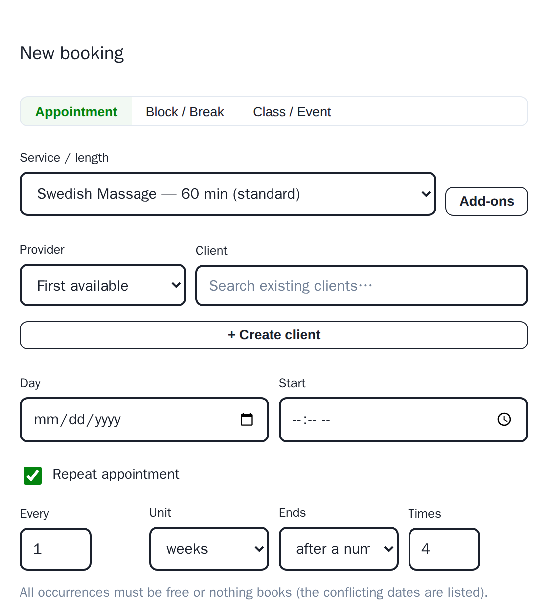
Every week, after four visits — or does not stop.
Because a standing slot is a promise — deposits keep it one, week after week.
Your deposit and prepay rules follow every visit in a repeating series, not just the first. Each future visit asks the client to pay ahead: a secure pay button rides the reminder email, or goes out as its own request when no reminder is scheduled early enough. If a visit is still unpaid as your cancellation window opens, staff get a heads-up in time to reach out or free the spot. Turn it on for all series, or decide per series at booking.
Because filling your book shouldn’t mean giving strangers the keys.
A copyable booking link with one toggle to turn public booking on or off. Set how much notice clients need, how far ahead they can book, which days each service is offered, and how tightly appointments pack. Restrict a therapist to existing clients, cap how many hands-on hours a day clients can book, and let the page wear your own colors and logo.
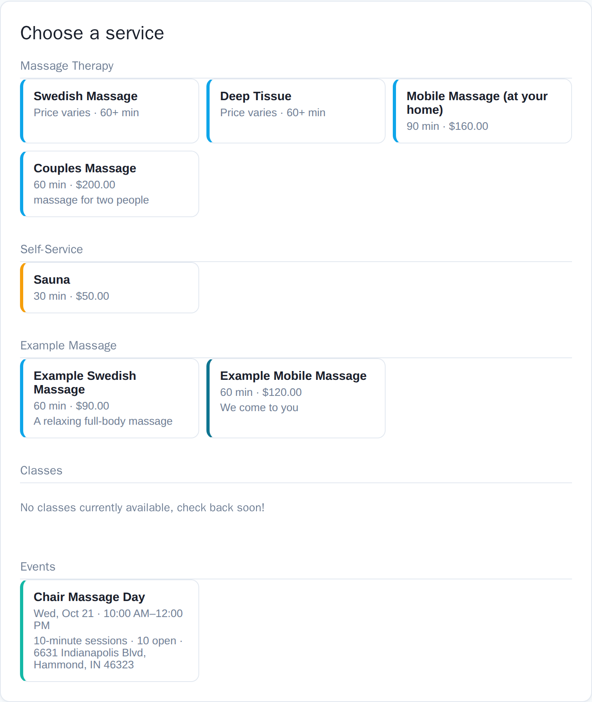
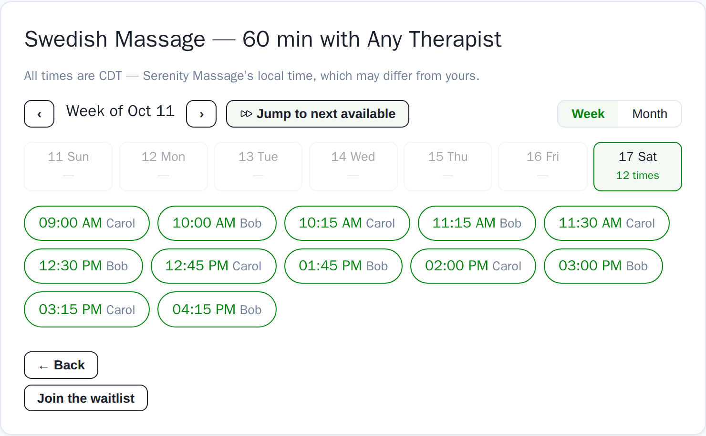
Service tiles, then real times in the business’s own time zone.
Because an empty slot should fill itself.
When a booked spot frees up, matching waitlist clients are offered it automatically, in order. Optional last-call blasts reach clients who asked for short-notice openings — and only them. When the day is still gappy, auto-condense asks clients who agreed to be flexible whether they’d shift to tighten it.
Because someone who made it to the payment step wanted that appointment.
When a client gets all the way to paying and doesn’t finish — their card declined, the hold timer ran out, or they just closed the tab — the slot reopens automatically and the booking log records exactly where they dropped out, with everything they entered: name, contact, service, and the time they wanted. Nothing was charged, nothing clutters your calendar, and one quick call or email often finishes the booking. Most software silently loses these people.
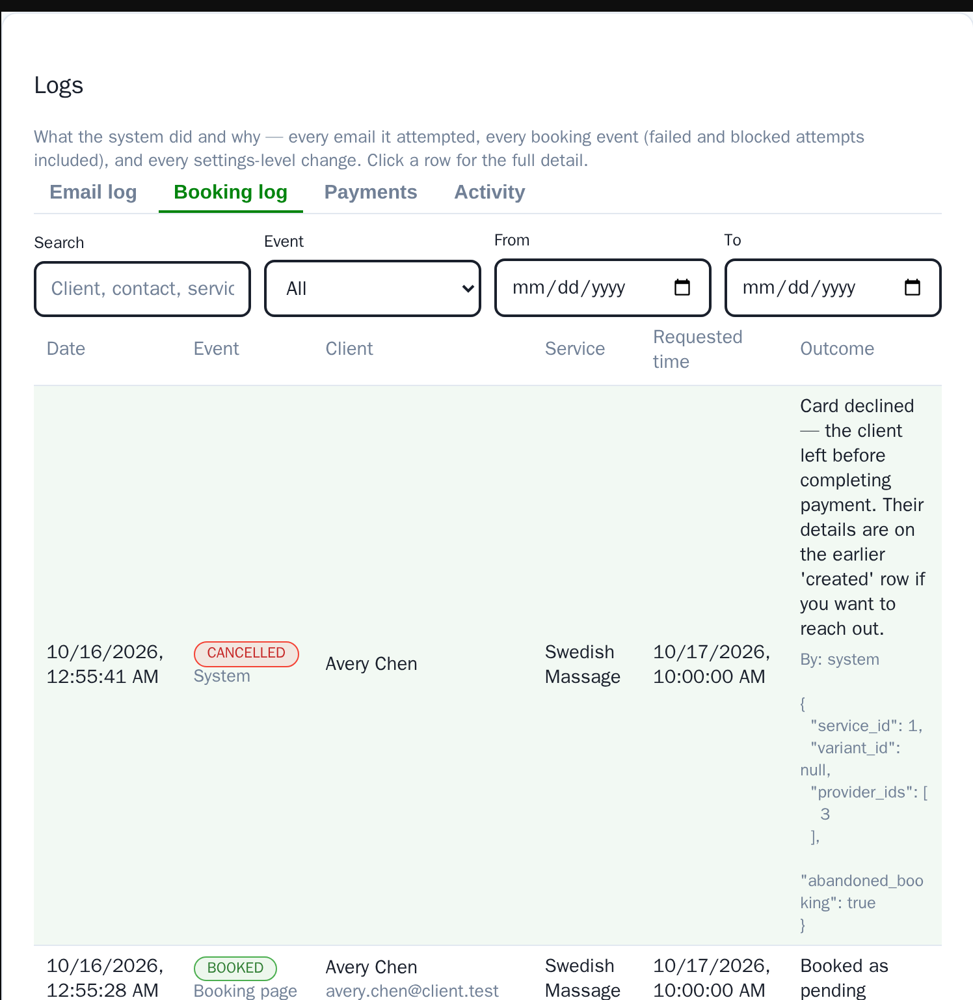
The drop-out, the reason, and the contact details to follow up with.
Because a second revenue line shouldn’t need a second app.
Sell gift cards and prepaid packages, run memberships that auto-charge dues and grant credits each cycle, set up promo codes with real constraints, and stock retail with inventory — all from the same checkout, and all on your booking page as an online shop. Balances and credits apply themselves at booking and checkout, and the ledger tracks every credit from sale to use. You can even use the same checkout to send gifts to your clients. Grant promotional credit to everyone, or just one therapist’s regulars, or to anyone who visited this year. Send them now, on a date, or automatically on birthdays, anniversaries and milestone visits — with your own message. Client appreciation and holiday promotions in one send, and your accounting stays correct and up to date, no extra fees for $0 transactions just because they grant gift cards to clients.
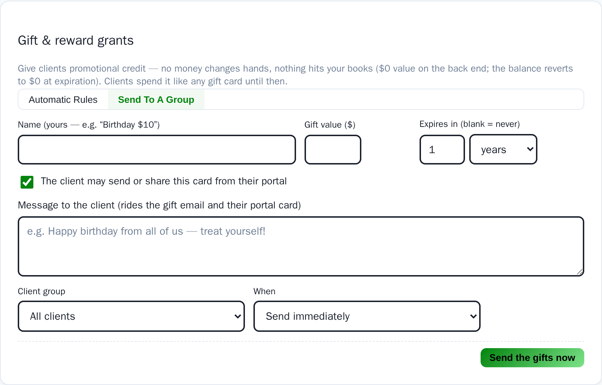
A thank-you to every client, in one send.
Because your front desk and your bookkeeper shouldn’t cost as much as a therapist.
Every plan includes one calendar seat — a bookable therapist schedule — and five logins. Logins are for the people who work in the software without taking appointments: your front desk, your accountant, your back-of-house staff. They’re part of the package, at no extra cost, with permissions you set per person. Need another therapist? Add a calendar seat for $10 a month (and two more logins come with it) — you never have to jump a whole tier just to add a provider. Tiers are for features. Seats are optional.
Every business starts with a day-before reminder already set up. Add more reminders, before and after the visit, with confirm-you’re-coming links.
Cap how much bodywork a therapist’s body takes per day or week. Set a strict cap for physically demanding work and a looser one for your overall workload. Your calendar doesn’t stop consults just because you can’t do another sports massage that day. You can even exempt long events from the cap.
One booking, two guests, two therapists, one time. Both seats check real availability, and the pair confirms, cancels and declines together. No more checking each therapist’s availability by hand.
Sell gift cards, prepaid packages, retail and recurring memberships online. Balances and credits apply themselves at booking and checkout.
Build policy and intake forms in minutes, collect signatures online or on paper, and let renewals track themselves. Digital signatures record which version of the form was signed and make sure clients sign the latest one. You can even set a default form per service.
Staff-only flags, per-client extra turnover time, birthday and paperwork-renewal reminders, clean duplicate merging — the details that turn a booking into a relationship and the tools to make managing your clients effortless.
Change a client’s address and KinesioCal offers to move their upcoming home visits too, then flags each one for a quick travel re-check.
Every client gets a portal with their history, contact info, and downloads — theirs to keep, even if a business and a client part ways. They have the tools to manage their own appointment history, contact info, and downloads. No more calls asking what credits are on the account, when they expire or if you can resend that invoice again, it’s one click away.
KinesioCal was created by a massage therapist who runs her own practice on it every day. After years on the big booking platforms, she found that every one of them was a trade-off: the one with the nice calendar couldn’t do invoices, the one with good reminders had no blocklist, and all of them seemed to think the software knew how her schedule should work better than she did.
She felt therapists and similar hands-on fields deserved a platform where all the options work together, instead of choosing what to live without. So she built it.
I’m Emma Bufalini, and I’ve been a massage therapist for ten years, with both an office and a mobile practice. In all that time, no booking software ever fit the work. I used tools built for other industries and did extra administrative work just to make my calendar behave — and even then it was full of gaps that didn’t need to exist. The same problems kept coming back: clients got dropped, appointments disappeared, reminders didn’t remind.
Every automation in KinesioCal is a problem I needed solved myself, or one I heard a hundred times from other frustrated therapists. After struggling with it and watching others struggle too, I decided enough was enough and started teaching myself to program in 2024. If no one was going to build a good program for massage therapists, I would.
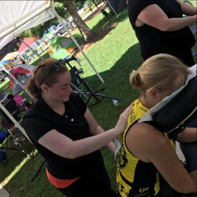
Online-booking rules shape what clients see. They never block you. If you want to book a walk-in, you book the walk-in.
Everything works without reading a manual. Easy Mode hides what you don’t need; sensible defaults handle the rest.
Portals belong to the client. Their history, their contact info, their downloads — even if a business and a client part ways.
Blocking blocks. Buffers show. Reminders send. If a button says it does something, it does exactly that — nothing less, nothing hidden.
Want to know when KinesioCal opens its doors — or just want to talk shop about running a practice?
Email KinesioCalendar@gmail.com